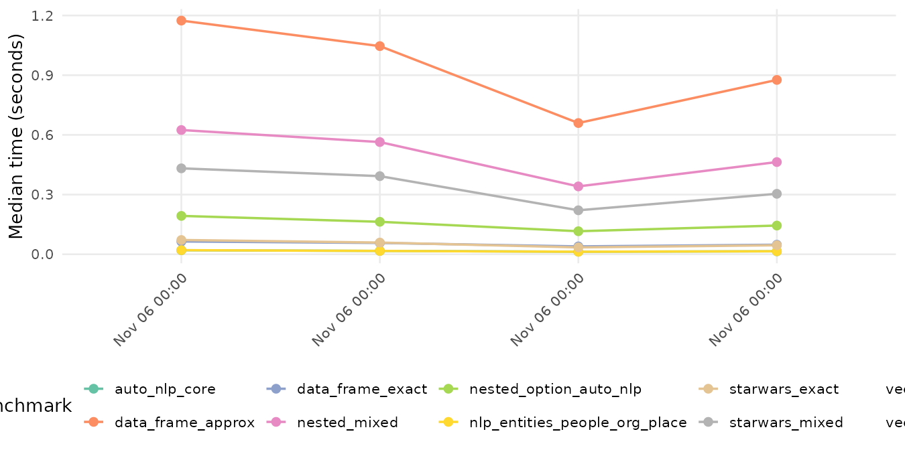

Non-blocking benchmark history for manual review over time.
20261106T161604Z-e9988f6main e9988f6
| Benchmark | Median | Itr/sec | Mem alloc | GC/sec | Delta vs previous |
|---|---|---|---|---|---|
| anon_auto_nlp_core | 0.017 s | 59.304 | 0.28 MB | 0.000 | -17.0% |
| anon_data_frame_approx | 1.046 s | 0.955 | 2.59 MB | 0.000 | -10.9% |
| anon_data_frame_exact | 0.057 s | 17.574 | 1.11 MB | 0.000 | -11.6% |
| anon_nested_mixed | 0.564 s | 1.755 | 1.35 MB | 1.755 | -9.7% |
| anon_nested_option_auto_nlp | 0.163 s | 6.126 | 0.37 MB | 0.000 | -15.4% |
| anon_nlp_entities_people_org_place | 0.017 s | 59.441 | 0.24 MB | 0.000 | -18.9% |
| anon_starwars_exact | 0.059 s | 16.575 | 0.68 MB | 5.525 | -18.0% |
| anon_starwars_mixed | 0.393 s | 2.536 | 2.54 MB | 3.382 | -9.1% |
| anon_vector_approx | 0.895 s | 1.114 | 2.39 MB | 0.000 | -11.2% |
| anon_vector_exact | 0.045 s | 22.232 | 1.09 MB | 0.000 | -11.0% |
| Timestamp | Machine | Ref | SHA | R | CPU |
|---|---|---|---|---|---|
| 2026-11-06T15:28:07Z | github-actions | ubuntu-latest | main | 2dd806b | 4.6.2 | AMD EPYC 7763 64-Core Processor |
| 2026-11-06T16:16:04Z | github-actions | ubuntu-latest | main | e9988f6 | 4.6.2 | Intel(R) Xeon(R) Platinum 8370C CPU @ 2.80GHz |
| Timestamp | Machine | Benchmark | Median (sec) | Itr/sec |
|---|---|---|---|---|
| 2026-11-06T15:28:07Z | github-actions | ubuntu-latest | anon_auto_nlp_core | 0.02029262 | 49.2033476 |
| 2026-11-06T16:16:04Z | github-actions | ubuntu-latest | anon_auto_nlp_core | 0.01684329 | 59.3038335 |
| 2026-11-06T15:28:07Z | github-actions | ubuntu-latest | anon_data_frame_approx | 1.17431241 | 0.8508122 |
| 2026-11-06T16:16:04Z | github-actions | ubuntu-latest | anon_data_frame_approx | 1.04608190 | 0.9548632 |
| 2026-11-06T15:28:07Z | github-actions | ubuntu-latest | anon_data_frame_exact | 0.06433212 | 15.5676563 |
| 2026-11-06T16:16:04Z | github-actions | ubuntu-latest | anon_data_frame_exact | 0.05689412 | 17.5737005 |
| 2026-11-06T15:28:07Z | github-actions | ubuntu-latest | anon_nested_mixed | 0.62441885 | 1.5852142 |
| 2026-11-06T16:16:04Z | github-actions | ubuntu-latest | anon_nested_mixed | 0.56395277 | 1.7554596 |
| 2026-11-06T15:28:07Z | github-actions | ubuntu-latest | anon_nested_option_auto_nlp | 0.19283938 | 5.1770742 |
| 2026-11-06T16:16:04Z | github-actions | ubuntu-latest | anon_nested_option_auto_nlp | 0.16320197 | 6.1256718 |
| 2026-11-06T15:28:07Z | github-actions | ubuntu-latest | anon_nlp_entities_people_org_place | 0.02061765 | 48.7408119 |
| 2026-11-06T16:16:04Z | github-actions | ubuntu-latest | anon_nlp_entities_people_org_place | 0.01672099 | 59.4413523 |
| 2026-11-06T15:28:07Z | github-actions | ubuntu-latest | anon_starwars_exact | 0.07172936 | 13.6643655 |
| 2026-11-06T16:16:04Z | github-actions | ubuntu-latest | anon_starwars_exact | 0.05884326 | 16.5751795 |
| 2026-11-06T15:28:07Z | github-actions | ubuntu-latest | anon_starwars_mixed | 0.43183778 | 2.3087626 |
| 2026-11-06T16:16:04Z | github-actions | ubuntu-latest | anon_starwars_mixed | 0.39268486 | 2.5363161 |
| 2026-11-06T15:28:07Z | github-actions | ubuntu-latest | anon_vector_approx | 1.00811589 | 0.9889116 |
| 2026-11-06T16:16:04Z | github-actions | ubuntu-latest | anon_vector_approx | 0.89529168 | 1.1138730 |
| 2026-11-06T15:28:07Z | github-actions | ubuntu-latest | anon_vector_exact | 0.05056134 | 19.7870387 |
| 2026-11-06T16:16:04Z | github-actions | ubuntu-latest | anon_vector_exact | 0.04497531 | 22.2321058 |
Raw CSV: history.csv